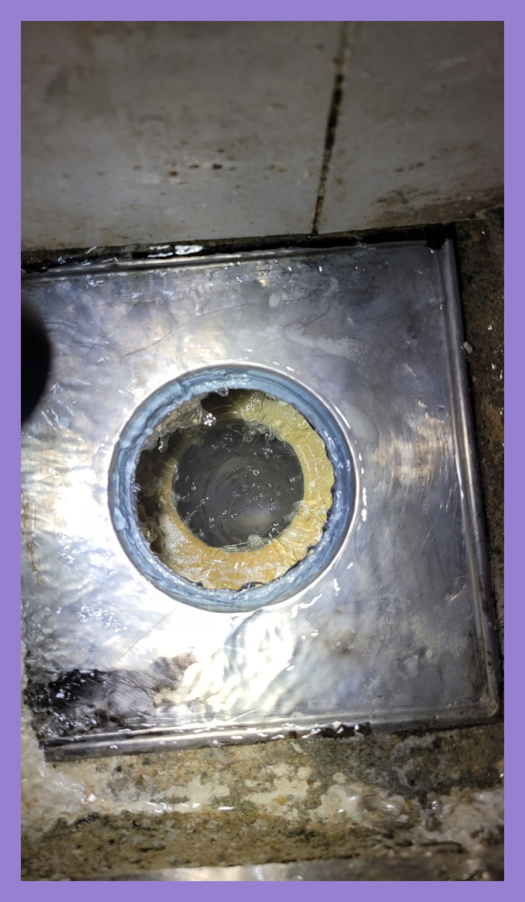
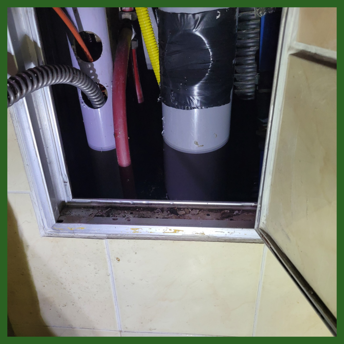
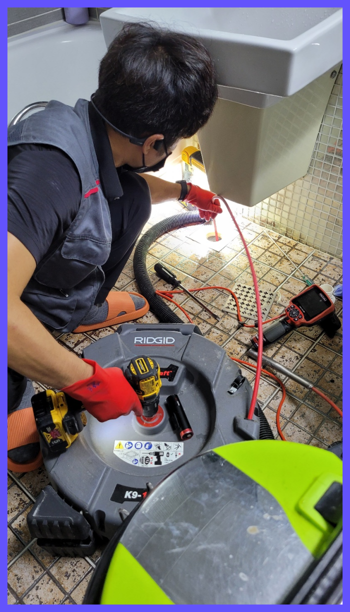
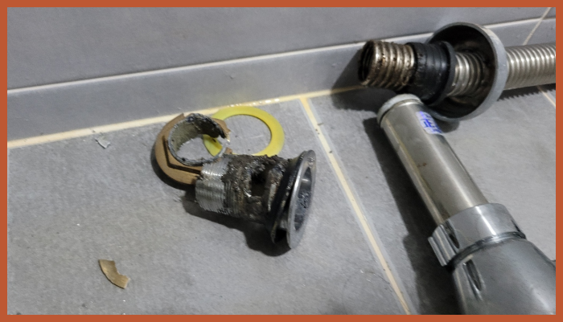
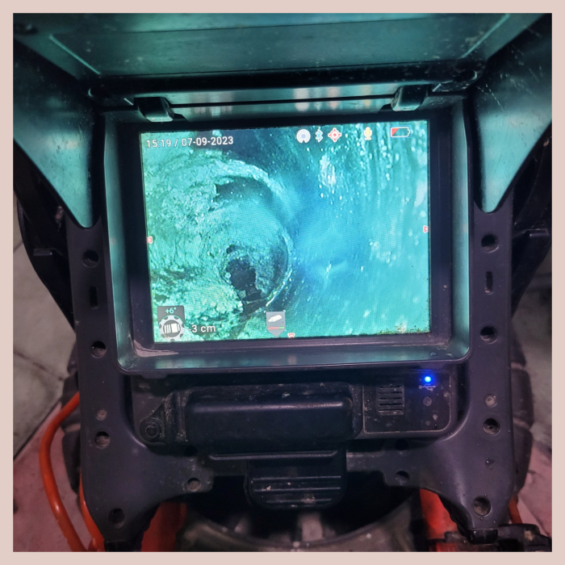
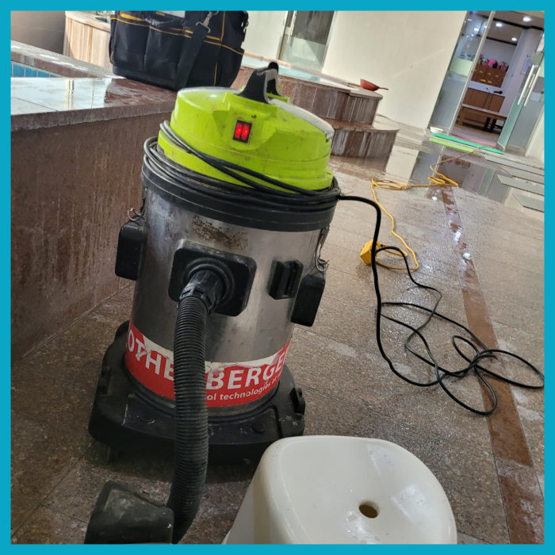

🏠 광교 욕실하수구막힘 이의동 화장실배수구역류 하수구석회제거
용인 이의동 싱크대막힘 전문 시공 후기

📋 작업 개요
- 위치: 용인 이의동, 이의동, 용인
- 서비스 유형: 싱크대막힘, 변기막힘, 하수구막힘, 배관막힘, 역류해결, 뚫는업체, 배관청소, 고압세척
- 작업 일시: 2023. 12. 22. 0:08
- 업체명: 하수구수사대 (010-5615-2118)
🔍 문제 상황
반갑습니다^^
설비전문업체 "하수구수사대"를 찾아주셔서 감사드려요^^
우리의 업무는 단순히 막힌 배관배관을 파괴하는 것이 아니라, 그 문제를 책임지고 배관까지 어떤 막힘도 신속하게 해결합니다. 출장비가 없는 것은 고객에게 부담을 주지 않기 위한 것이며, 어떤 상황에서든 우리는 문제를 해결합니다.
광교 욕실하수구막힘 이의동 화장실배수구역류 하수구석회제거

🔎 원인 분석
💡 전문가 진단: 광교 욕실하수구막힘 이의동 화장실배수구역류 하수구석회제거
작업 시간은 고객님에게 맞춰서 진행하고 있기 때문에 배수구 막힘으로 불편을 겪고 계신다면 언제든지 연락하여 주시면 어디라도 가리지 않고 출동하여 어려움을 해소해 드립니다.
이번 현장은 배관한 곳만 스케일링 소용이 없어서 반대쪽으로 이동하여 시도해 보았어요. 첫 번째로는 주름 호스에 납아 있던 노폐물들을 석션기를 이용하여 처리해 드렸어요. 배수 시원찮게 빠진다고 하시기에 욕실 배수구 쪽도 놓치지 않고 함께 보았어요.
하수관막힘에 따라 통수방식이 다르기에 최신장비를 갖고서 확실한 검수,진단에 맞춰 적합한 장비를 골라 작업을 진행해야합니다. 저희는 최신장비를 비롯해서 고압세척,정밀관찰,내시경 여러종에 장비를 싣고 현장을 다니기 때문에 즉시 해결이 가능합니다.
물을 사용하는데 배출되지 않으면 이용 자체가 어려워지죠. 발견하자마자 뚫어주지 않으면 악취 등의 문제들로 인해 답답해지기만 한데요. 퇴수 존재 자체를 느끼고 있지는 않지만 항상 우리 주위에 존재하고 있답니다.
하수도막힘을 해결하기 위해서는 여러가지 장비가 동원이 되어야 하고 그러한 장비를 사용하는 기술자의 기술 역시도 매우 중요한 부분입니다.최근에 하수구 뚫음 업체가 많이 생겨나고 있어 어떠한 업체에 맡기느냐도 중요한 부분인데요.

🔧 작업 과정
퇴수구뚫는 작업을 반복하면서 기름 슬러지를 말끔히 제거를 하면서 석션을 해주니 덩어리지거나 굳어서 고정된 오물들이 정말 많이 배출되었는데요. 퇴수구 내부에는 마지막으로 배관 내시경을 통해서 다시 한번 전체적인 검수를 진행하였습니다.
처음에는 급한 마음에 혼자서 셀프 요법으로 해결을 하려고 했지만 얼마 지나지 않아서 아예 배수관가 막혀버리다 보니 아무런 소용이 없었다고 하셨습니다.
위와같은것은 상태가나쁘지않을때 사용하는게현명한방법입니다.배출관 뚫을수있다면 아무문제없지만 문제가심화되었을때는 수리기사와 같이뚫으셔야됩니다.
이같은체계가 생겨난이유는 소비자분과의 신망을 지키기위해서 생긴것이고 이같은모토를 지키기위해 하수구에이물질이없게끔 하고있답니다.비용에대해서 알고싶으실수있는데요.배관의어떤곳이 어느만큼 파손된건지에따라 견전가가정해지기때문에 정확하게 하시려면 내방해서 확인해보는게 정확한데요.
하루빨리 하수뚫는것이 하나밖에없는 대책이란것을 기억하셔야됩답니다.최첨단기계와 많은전문지식을 갖추어진분들로 모여있어서 어디든지 확실하게수리 할수있어요!
세심하게확인하고 상황에따라 작업하고있어서 타업체와 비교할수없는 좋은서비스를 갖추고있습니다.배수저희업체를 안고르셔도 앞서설명 드린것들은 절대로잊으면 안되기에 기억하셔야합니다.확신가능한것은 어떤데든 문제가생겼다면 금방처리 할수있다는점입니다.
배관 스케일링을 한번 하시고 유지하는 관리만 잘 해주시면 간편하게 배관 막힘없이 오래 사용하실 수 있습니다. 청결을 생각하시는 분들이라면 하수도배관 스케일링을 모르고 지나갈 수 없듯이 이 사전 입주청소만 하지 마시고 무엇이 들어있을지 모르는 배관 청소부터 꼼꼼하게 하세요.
이런 이물질들은 샤프트 작업으로 모두 제거해 드렸습니다. 그리고 석션기를 이용해 빼내주었지요. 찐득하게 배수관배관 벽에 달라붙어있는 자잘한 기름때는 제거하기 복잡하지만, 그래도 샤프트 장비가 있다면 모두 없애드릴수 잇으니 거정하지 않으셔도 됩니다.


✅ 작업 완료
배수구배관들은 온갖 사유로 장애가 발생하는데 어떤 배수구막힘들도 마주해보고 고쳐본 적이 없다면 예기치 못한 증상에는 대처 불가능하기에 못 뚫어 버릴 수도 있습니다. 입증 가능할 만한 실력 보유자만 뭉쳐있는 까닭 중의 하나입니다.
#하수구막힘 #하수구뚫음 #하수구역류 #씽크대막힘 #싱크대역류 #오수관막힘 #하수구청소 #욕실하수구막힘 #변기막힘 #하수구뚫는비용 #싱크대수리 #화장실막힘




⚠️ 주방 싱크대 배관 막힘 예방 수칙
- ✅ 기름기가 묻은 식기나 프라이팬은 설거지 전 키친타올로 반드시 기름때를 닦아내세요.
- ✅ 주기적으로 싱크대 개수대에 뜨거운 물을 가득 받아 한 번에 내려 배관 내부 기름을 씻어내세요.
- ✅ 배수구 거름망을 미세한 필터로 사용하시고 음식물 찌꺼기가 틈으로 새어 들지 않게 관리하세요.
- ✅ 베이킹소다와 식초를 뜨거운 물과 함께 일주일에 한 번씩 부어주면 배관 살균과 막힘 예방에 좋습니다.
💡 핵심 정리
- 확실한 장비 작업(내시경 점검 및 샤프트 스케일링)으로 원인을 뿌리 뽑습니다.
- 작업 후 1년 이내에 동일한 부위 재발 시 100% 무상 A/S 서비스를 보장합니다.
- 서울 · 경기 · 인천 전 지역에 24시간 언제든 긴급 출동할 수 있도록 항시 대기 중입니다.
❓ 자주 묻는 질문 (FAQ)
🚨 용인 이의동 싱크대막힘 문제로 고민이신가요?
정확한 원인 진단과 확실한 시공으로 재발 없는 해결을 약속드립니다.
24시간 긴급 출동 | 서울 · 경기 · 인천 전지역 | 1년 내 재발 시 무상 A/S